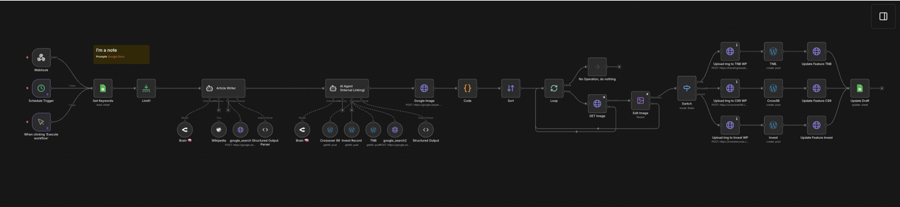

A single N8N workflow powered by Multi-Agent AI that runs like an entire content team. Keywords and target sites are managed in Google Sheets — the workflow picks them up, researches using Wikipedia & Google Search, writes full SEO articles, finds and processes images, adds internal links, and publishes across 3 different WordPress sites automatically. One workflow. Multiple AI agents. Multiple websites. Zero manual steps.

Entertainment news site — movies, celebrities, OTT releases & trending internet culture
Sports & crossover content site — routed separately with its own WordPress credentials
Finance & investment content site — articles auto-published with relevant imagery
Running 3 WordPress content sites manually is a full team's job — keyword research, writing, SEO, image sourcing, internal linking, and publishing — repeated daily across 3 different platforms. Completely unscalable for one person.
Each article needed research, writing, SEO structuring, and formatting — multiplied across 3 websites with different audiences and niches. Hours of work per day, per site.
Finding relevant images, downloading them, resizing, and uploading to WordPress with the right feature image settings — repeated for every article, every day.
Manually adding internal links to relevant posts on each site requires knowing the existing content library deeply — impossible to do consistently at scale.
Each site has different WordPress credentials, categories, and settings. Managing all three manually meant constant context-switching and human error.
I built a 36-node N8N workflow that acts as a full content team — from keyword input to published article with feature image and internal links — across all 3 websites simultaneously.
An OpenRouter-powered AI agent writes full SEO articles using the keyword from Sheets — researching via Wikipedia and Google Search, finding YouTube trailers, and structuring the content with proper SEO titles.
A second AI agent scans the correct WordPress site's existing posts and inserts relevant internal links naturally into the article — with external links from trusted sources via Google Search.
The workflow fetches a relevant image, processes it using the Edit Image node, uploads it to the correct WordPress media library, and sets it as the feature image — all automatically.
A Switch node reads the target website from Google Sheets and routes the entire pipeline — article, image, and publishing — to the correct WordPress site with zero manual intervention.
The workflow supports 3 trigger modes: runs automatically on a schedule, fires via Webhook from an external source, or runs manually. Fully flexible for any use case.
All data lives in Google Sheets — keywords, target websites, and publish status are managed in one central sheet. The workflow reads keywords, identifies the target website (Site A / Site B / Site C), and marks rows as processed after publishing. Google Sheets acts as the full data management layer.
An OpenRouter-powered AI agent writes a full SEO article as a senior entertainment/finance journalist — using Wikipedia for background research, Google Search for facts & YouTube trailer URLs, and outputting a structured JSON with seo_title, article body, and youtube_trailer_embed_url.
A second AI agent takes the written article, calls the correct WordPress tool to fetch existing posts, and inserts relevant internal links naturally — plus external links from trusted sources via Google Search. Strictly no rewriting, only linking.
Fetches a relevant image via Google Image search, downloads it using HTTP Request, processes and edits it using the Edit Image node, then sorts and prepares it for upload.
A Loop node processes items in batches. A Switch node reads the target website from Sheets and routes everything — article and image — to the correct WordPress branch (Site A / Site B / Site C).
Uploads the processed image to the correct WordPress media library via HTTP Request, then sets it as the feature image on the published post — separately for each of the 3 sites.
Publishes the final article (with feature image, SEO title, internal links, and YouTube embed) as a draft or live post on the correct WordPress site. Updates the Google Sheet row to mark the keyword as processed.
Concrete improvements from replacing a manual content team with a single automated pipeline.
What previously needed a writer, SEO specialist, image editor, and publisher for each site now runs entirely through one workflow — managed by one person.
Every article gets relevant internal links added automatically by an AI agent that reads the actual site content — something manually impossible to do consistently.
No more manually finding, downloading, resizing, and uploading images. The pipeline handles the full image workflow for every article on every site.
The Switch node handles all routing logic — same workflow, same trigger, three completely separate publishing destinations with their own credentials and settings.
Every article is backed by real Wikipedia data and Google Search results — not hallucinated. Facts are verified, dates confirmed, and sources cited automatically.
Writing, researching, linking, image processing, and publishing across 3 sites — tasks that consumed an entire workday — now run in minutes with zero intervention.
N8N Workflow File
The complete N8N workflow used in production. Import it directly into your N8N instance — all 36 nodes, AI agent prompts, routing logic, and WordPress connections included.
OpenRouter-powered LangChain agent writing full SEO articles with structured output (seo_title, article, youtube_trailer_embed_url) per keyword.
Second AI agent that reads existing WordPress posts and inserts natural internal + external links without rewriting or changing the article structure.
Built-in research tools that the AI agents use to verify facts, find dates, confirm quotes, and locate YouTube trailer URLs before writing.
Reads the target website from Google Sheets and routes the full pipeline to the correct WordPress branch — Site A, Site B, or Site C.
Automatically processes and edits the fetched image before uploading — resizing, cropping, or formatting as needed for WordPress feature images.
Publishes articles with feature images, SEO titles, and embedded YouTube trailers to 3 separate WordPress sites using individual API credentials per site.